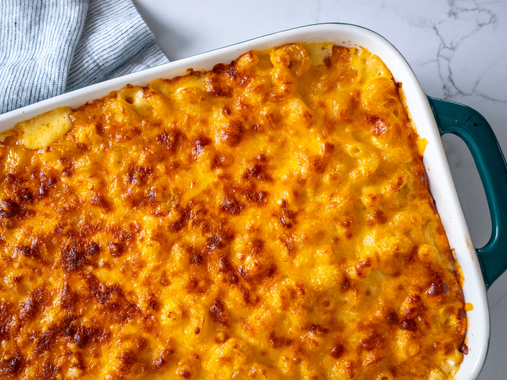

Homemade Mac and Cheese

Description
This homemade mac and cheese is topped with buttered bread crumbs for pure comfort food. It's easy to make the cheese sauce from scratch,
starting with a roux and adding milk, Cheddar, and Parmesan to make a rich, decadent sauce that coats every nook and cranny of the noodles.
Skip the boxed stuff and make homemade mac and cheese tonight. This from-scratch macaroni and cheese recipe will become a staple in your dinner rotation.
Ingredients
- 8 ounces uncooked elbow macaroni
- ¼ cup salted butter
- 3 tablespoons all-purpose flour
- 2 ½ cups milk, or more as needed
- 2 cups shredded sharp Cheddar cheese
- Cheddar and Parmesan cheese
- ½ cup finely grated Parmesan cheese
- Salt and ground black pepper to taste
- Paprika
- For the bread crumbs: 2 tablespoons salted butter, ½ cup dry bread crumbs, 1 pinch ground paprika
Steps
- Gather all ingredients. Preheat the oven to 350 degrees F (175 degrees C). Grease an 8-inch square baking dish.
- Bring a large pot of lightly salted water to a boil. Add macaroni and simmer, stirring occasionally, until tender yet firm to the bite,
about 8 minutes. Drain and transfer to the prepared baking dish.
- Meanwhile, melt ¼ cup butter in a medium skillet over low heat; whisk in flour until mixture becomes paste-like and light golden brown, 3 to 5 minutes.
- Gradually whisk in 2 ½ cups milk; bring to a simmer.
- Stir in Cheddar and Parmesan cheeses; season with salt and black pepper. Cook and stir over low heat until cheeses are melted and sauce has thickened,
3 to 5 minutes, adding up to ½ cup more milk if needed.
- Pour cheese sauce over macaroni; stir until well combined.
- Melt 2 tablespoons butter in a skillet over medium heat. Add bread crumbs; cook and stir until well coated and browned.
- Spread bread crumbs over macaroni and cheese; sprinkle with paprika.
- Bake in the preheated oven until topping is golden brown and macaroni and cheese is gooey and bubbling, about 30 minutes.
Back